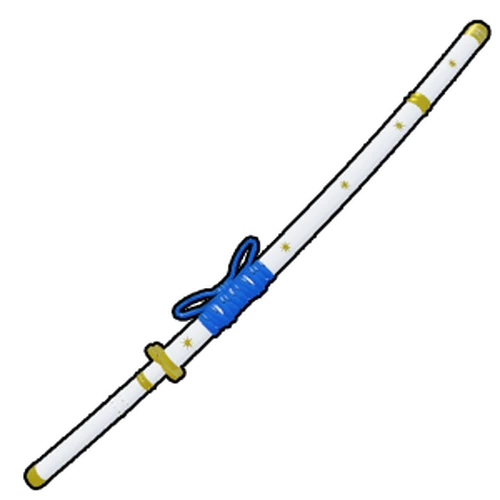

Top espadas do blox fruit
BÔNUS.True triple yoru
1.Yoru
2.Shisui

3.Tridente do katakure
4.Cursed dual katana
5.Rengoku
6.True tripe katana
7.Tushita
8.Yama
9.Soul cane
10.Sabre
Melhores espadas do sea 1
As melhores espadas do Primeiro Mar (Sea 1) Existem algumas espadas que você pode obter no Primeiro Mar, mas poucas valem o seu tempo. De todas elas, destacamos três como as melhores do Primeiro Mar: Saber, Soul Cane e Bisento.